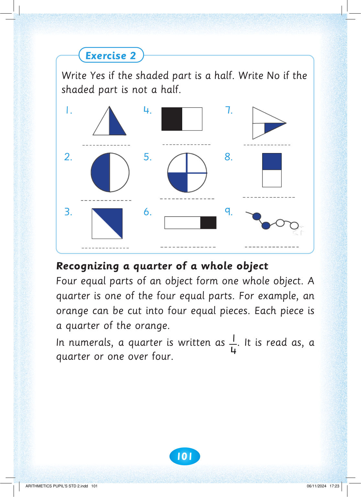
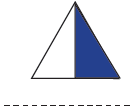
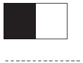
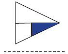
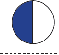
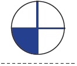
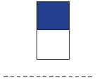
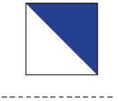
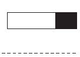
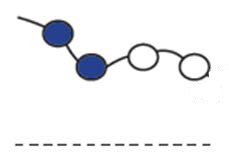

![Exercise 2. Write Yes if the shaded part is a half. Write No if the shaded part is not a half. Nine numbered shapes are shown: a triangle with one side shaded, a circle half shaded vertically, a square divided diagonally with one triangular half shaded, a rectangle with the left half shaded, a circle divided into four parts with one quarter shaded, a long rectangle with a small right section shaded, a pointed triangle-like shape with a small inner triangle shaded, a vertical rectangle with the top half shaded, and a chain of five circles with the first two shaded.](images/pg107_im010.png)










101


Exercise 2

Write Yes if the shaded part is a half. Write No if the

shaded part is not a half.
1.

4.

7.

2.

5.

8.

3.

6.

9.

Recognizing a quarter of a whole object
Four equal parts of an object form one whole object. A quarter is one of the four equal parts. For example, an orange can be cut into four equal pieces. Each piece is a quarter of the orange.
In numerals, a quarter is written as 4
1. It is read as, a quarter or one over four.


ARITHMETICS PUPIL'S STD 2.indd 101
06/11/2024 17:23